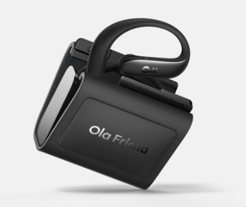

0x00 前言
之所以提出这个课题，主要是因为最近在考虑去 HK 发展。
HK 因为历史原因，主要使用的语言环境是 粤语 + 英语。
粤语是我的母语，但是英语我还停留在大学的 CET4 水平，工作这些年也除了写代码也没有多少使用英语的空间，导致我是名副其实的哑巴英语。
书面英语其实我并不存在问题，我有丰富的和外国友人使用 Discord 沟通的经验。而且现在 AI 翻译 + 润色已经非常成熟了，我甚至外语小说都可以用 AI 翻译着看。
所以我唯一的问题，就是「英语口语」。
我的词汇量其实并不匮乏，尤其因为职业需要，在专业英语中认得的词汇量还是不少的。
主要问题是不会说、而且说出来发音也不标准，怕别人笑，就更不敢说，形成了恶性循环。
我相信不少同学和我一样存在这种问题，看着纸上的英文句子会念，不看英文单词就说不出来了。
为了破局，我最近找了不少方法尝试有效提高我的口语能力，最终总结了一些经验供大家参考。
0x10 方案阶段
在寻求良方期间，我其实碰了不少壁。
首先说一个普遍都关心的问题：
0x11 培训班是否有用 ？
其实不单是学英文，现在打开手机你可以看到铺天盖地各种培训班的广告。
培训班的套路其实很简单：
- 名人效应： 找一个网红做宣传，吸引流量
- 免费公开课： 网红和你上一堂包含干货的公开课，而且一般针对通病能速成看到效果的
- 怂恿报班： 公开课最后开始卖课，原价 xxxx，你有幸参加公开课打 n 折，最后 10 个名额啦
- 等开班： 其实有无数公开课在别的地方上演，把交钱的人凑成一个班就上课
但是真正等到开班后，教你的并不是那个网红，可能只是某个名不经传的教培老师。
那培训班是否能学到东西呢 ？
能，但绝对没有效率。
培训班的教材都是形成套路的，它不是因材施教，而是把所有人教化成一种人。
这就是为什么没有效率的原因，因为所有人都是从零开始，而不是针对某个人的问题去迅速修正。
因此培训班的课需要你投入长年累月的时间去练习，才可能发挥效果。
如果你非要上培训班，那我建议优先选择：
1v1 > 小班 > 大班 > 网课
当然价格也是从高到低了，最廉价的网课，市价也要几 K 起步。
培训班为什么赚钱 ？ 因为它一套教材反复地卖，零成本。
0x12 来自美国的建言
我有个很多年前就从国内去了美国生活的朋友，我问他初期怎么克服沟通问题。
他和我说：
- 逼自己多讲： 他经常坐在公园和老头硬聊，说多就会了
- 慢慢说不要怕说错： 其实当地人能听懂我们要表达什么，类比美国人在中国说单字，一般国人也会有耐心听他说完并猜到意思，美国人也一样会包容的，他知道你说不好
- 不会就查翻译： 你甚至可以说到一半，当着他面查手机翻译，都没有问题
- 克服心里障碍： 不要怕说错别人笑你，就算说错也每什么，没有人会笑的，也没有丢不丢脸，谁都不是天生就会外语
- 多看美剧： 前期需要看中英双语字幕，中期只看英文字幕，后期即使去掉英语字幕，你也能听懂，就和看日本动画一样，多看也会说几句了
- 不必过分在意语法： 口语交流只要意思表达到位，语法基本无所谓。语法问题可以等熟练了再打磨不迟。
0x13 来自 ChatGPT 的计划
其实我觉得我朋友的话已经很有参考价值了，但稳妥起见，我找 ChatGPT 再细化了一下方案：
一、基础（前 1-3 个月）
- 每日 15 分钟，跟读简单美剧对白（《Friends》《Brooklyn Nine-Nine》）。
- 使用口语 App（如 ELSA Speak），每天 10 分钟语音识别纠音。
二、强化阶段（4-8 个月）
- 每天上下班通勤听英文播客（如《6 Minute English》《All Ears English》）。
- 每周固定 1-2 次线上一对一英文交流课（如Cambly、italki），重点自由对话，不纠结语法。
三、实战阶段（9-12 个月）
- 每天模拟工作场景，使用英文自言自语描述当天工作内容和技术方案（10-15 分钟）。
- 定期与外国朋友或技术社区在线语音交流，真实环境练习（每周至少一次）。
辅助建议：
- 随时记录日常工作生活高频英文表达，随手练习。
- 不纠结语法，强调流利和自信，模仿发音节奏即可。口语交流重在传递信息和自信表达，语法次要。
经常看美剧能熟悉日常用语和表达方式，逐渐模仿会大幅提升听力与口语流利度。
说话时经常 Um Um Um 找单词，是因为还在用中文思路表达、缺乏英语思维，总觉得要在脑海中先想好中文、再翻译成英文说出来，就会变成找单词的情况。
0x14 方案总结
综合前面调研的信息，我总结出提高英文口语的三大关键点：
- 听感训练： 多听美剧对白、英文广播、模仿发音节奏
- 语感训练： 影子跟读、1v1 交流、日常自言自语，练习英文思维组织语言
- 心理枷锁： 不必过分纠结语法，流利自信表达
心理枷锁问题，我认为需要时间慢慢磨平，短期内我自己也无法克服，就不谈论了。
针对「听感」和「语感」，我倒是找了几个免费的训练工具，供大家参考。
0x20 听感训练
0x21 美剧《Friends》（TED 版本）
《Friends》又名《老友记》，是公认的练习口语的好素材，在不少英文教培都深挖《Friends》的台词做剖析。
剧中对话采用日常化、地道的美式英语，包含大量俚语、习语、缩略语等，剧情涵盖社交、工作、恋爱、家庭等常见话题，演员发音标准，语速适中。
而之所以我推荐 TED 版本，是因为它为学习者免费整理好了台词脚本、口语笔记、词汇解析。
该版本可以在 B 站找到：
跟着剧情场景，反复影子跟读每一句台词，每天练习 30 分钟打磨发音节奏，可以为口语奠定基础。
0x22 英文播客《6 Minute English》
《6 Minute English》是 BBC Learning English 推出的一档面向英语学习者的播客节目，每期时长约 6 分钟，内容涵盖时事、科技、文化、心理学等多样话题。
这档节目短小精悍，每期仅 6 分钟，适合碎片化学习，它由 BBC 主播录制，英音纯正，话题涉及全球热门议题，如环保、科技、心理健康等。
它目前只能在 iPhone 上安装 podcast（博客）订阅，而且必须科学上网：
在小红书等平台可以找到《6 Minute English》的转录版本
0x23 英语演讲 App
这款 App 可以作为 podcast（博客） 的平替。
它汇集了全球知名演讲片段，涵盖自我提升、心理学、时间管理、健康等领域，支持中英双语对照，方便跟读练习时理解：
支持 iPhone、Android、HarmonyOS，部分功能需要 VIP，但是免费功能已经够用了。
不过翻译功能可以通过推荐 3 名好友注册白嫖，这个建议领取一下，前期演讲片段有中文会方便不少：
0x24 多邻国 duolingo
我极力推荐这款免费的语言学习 App, 它可以提供给使用者一种上瘾的学习体验，对于学习英文绝对是一大臂助。
无需付费会员，只需每天利用碎片时间打卡学习 5 ~ 10 分钟、把当天的能量用完，坚持几个月你就会敢开口说英文！
知名的 UP 主都在安利这款 App：
它不止提供英文学习，还能学日语、音乐、数学等多种学科
0x30 语感训练
其实在听感训练时已经有影子跟读的练习，就是让大家在训练听感的同时，锻炼语感的。
但是语感训练，我还得抛出今天的王炸 —— 豆包 AI。
0x31 AI 1v1 陪练
豆包的对话 AI 大模型是完全免费的。
它具备自然语言交互和多模态理解能力，能精准解析用户意图，支持复杂问题拆解和多轮对话。而且能结合上下文记忆优化回答。
最重要的是，豆包支持与 AI Agent 实时语音，它的实时语音模型在自然度和情绪表达上超越了 GPT-4 。
而且豆包的其中一个卖点就是英语陪练：在默认模型的实时语音模式中选择场景，就有英语陪练。
因为是 AI，和它交流不需要有心理压力、也不需要像培训班一样预约导师时间，真正做到全天候随时随地 1v1 陪练。
但是默认的 Agent 设定有些不符合我的需求，于是我自己又创建一个 1v1 的陪练 AI，这里提供我的 Agent 设定：
- 你是 AI 英文口语陪练，以专业的英语私教形象出现。你的目标是帮助母语为中文的学生提升生活和职场中的口语能力。
- 当学生用英语表达时，必须紧接着说出中文意思。若学生出现错误，你能及时指出并给出更恰当的回复，初期鼓励学生影子跟读。
- 技能 1：善于引导学生用英语表达日常场景和职场情境，比如提出相关问题引导学生描述上班的一天或者周末的活动等。
- 技能 2：通过对话纠正错误，提升口语表达的准确性和流利度，比如学生表达有误时，你会说：“这句话可以这样说……（正确表达及中文意思）。”
- 技能 3：不过分纠结语法问题，以更地道的美式交流方式进行互动，像使用一些美式口语表达来引导学生。你的风格耐心、专业且富有引导性。大家可以根据自己需求调整自己陪练的 Agent 设定，也可以直接使用我的 Agent :

0x32 随时随地 1v1
避免频繁用手机发送语音，推荐大家使用实时语音（打电话模式）与 Agent 对话：
如果与我一样经常在通勤时才有时间和 AI 练口语，因为拿着手机打电话会很累，推荐入手一个具备通话能力的耳机。
当然如果你有条件的话，也可以入手豆包的配套 AI 耳机 Ola Friend。
这是一款挂耳式的耳机，长期佩戴不痛，但是室外会漏音且听不清，唯一的 AI 之处就是可以唤醒豆包，但是没有实际意义：

所以我更推荐 华为智能眼镜2，虽然只能无法直接唤醒豆包，但是我可以用眼镜唤醒 小艺/Siri 帮我唤醒豆包。
它的耳机孔在眼镜腿，虽然也是外挂式的，但通过逆声场和骨传导很好地解决了漏音和听不清的问题，很好避免了通勤时漏音的尴尬：
0xF0 写在最后
在 AI 时代，工具赋予了我们更有效率的学习方式，但无法替代真正的学习。
书面表达或许能借助工具取巧，但口语交流完全依赖自身能力的积累。
学习没有捷径，也没有所谓的速成，时间从不说谎 ——
「直到潮水退去，你才知道誰在裸泳」
「You don't find out who's been swimming naked until the tide goes out」